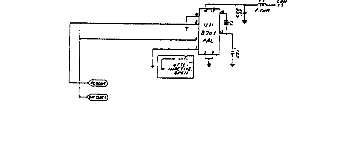

Crystal Y1 develops a 14.31818MHz fundamental frequency clock signal. U31 is a Dual Voltage Controlled
Oscillator. The output on pin 10 is a 14.31818 MHz clock signal called the color clock. R27
can be adjusted to obtain exact output frequency. U30 is a frequency divider that outputs a 2MHz
signal on pin 6. U29 is a D flip flop which outputs a 1MHz signal on pin 9. U32 is a Phase/Frequency
Detector which compares the output of the U29 to the phase 0 clock, and outputs a dc voltage on
pin 8 that is proportional to the phase difference between the inputs. The second half of the Dual
Voltage Controller Oscillator U31 generates an 8.1818MHz clock signal called the DOT Clock. The
VIC IC divides the DOT clock by eight and outputs this as the phase 0 clock on pin 17. The output
of the Phase/Frequency Detector is applied to the frequency control input pin 2 of U31. This causes
tracking of the dot clock and the color clock because one input, pin 4 of U32, is the phase 0 clock
which is derived from the dot clock, and the other pin 1 of U32, is derived from the color clock.

The C64B Clock Circuits. Refer to schematic 251469
Crystal Y1 develops the fundamental 16Mhz clock signal. U31 is a Clock Generator IC that outputs
the 8.1818MHz DOT clock on pin 6, and the 14.31818 MHz color clock on pin 8.